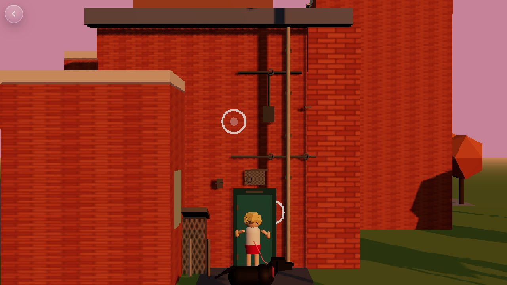
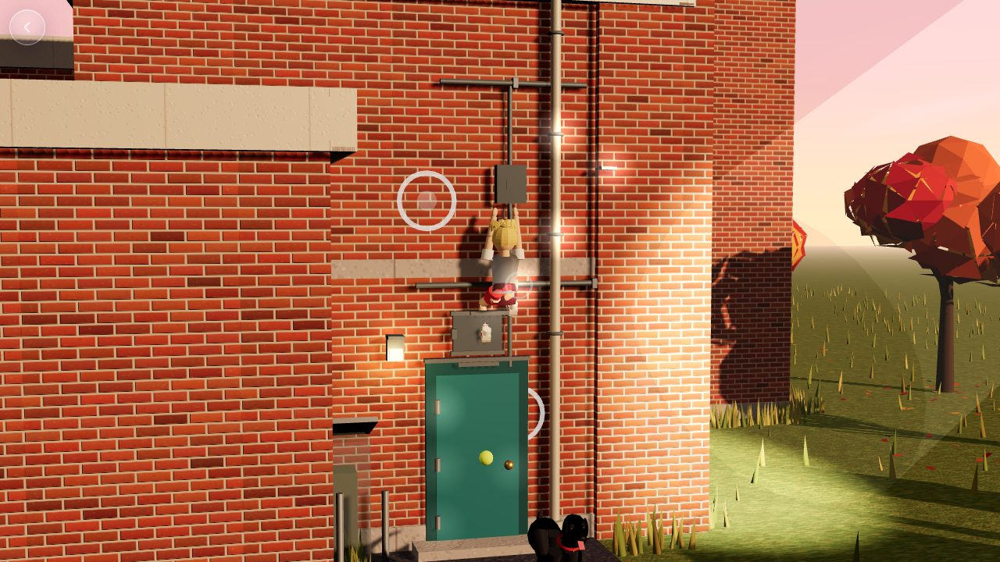
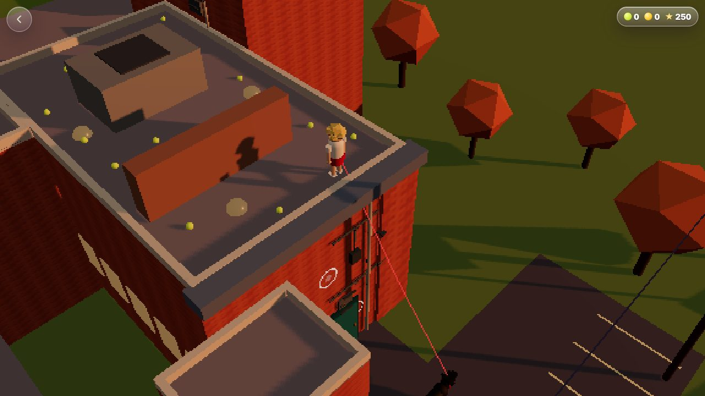
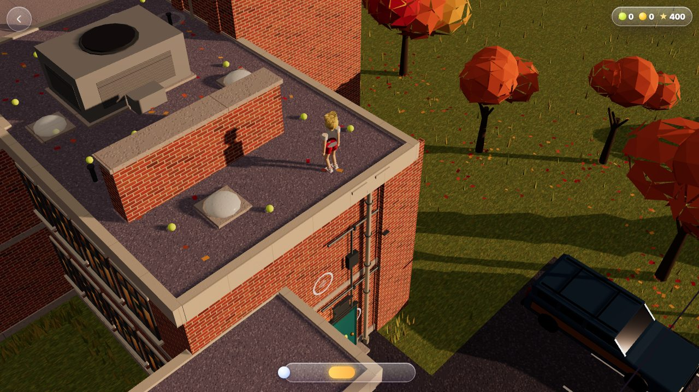
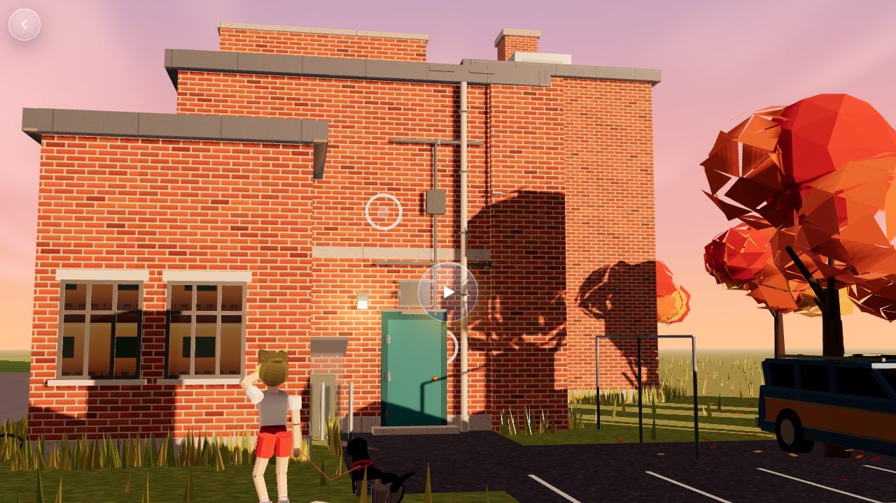
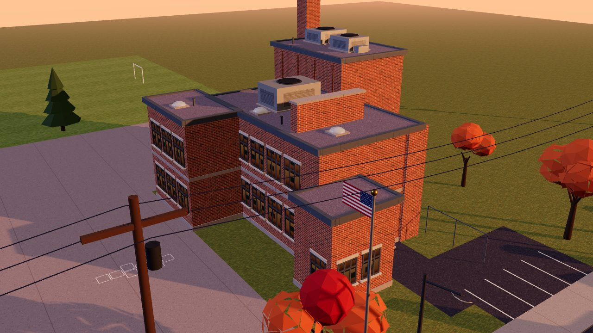
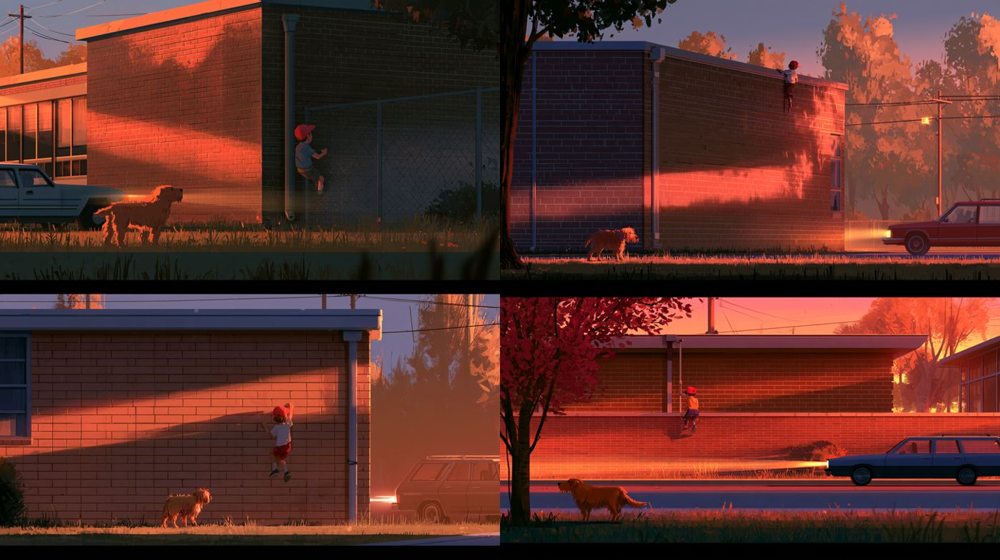
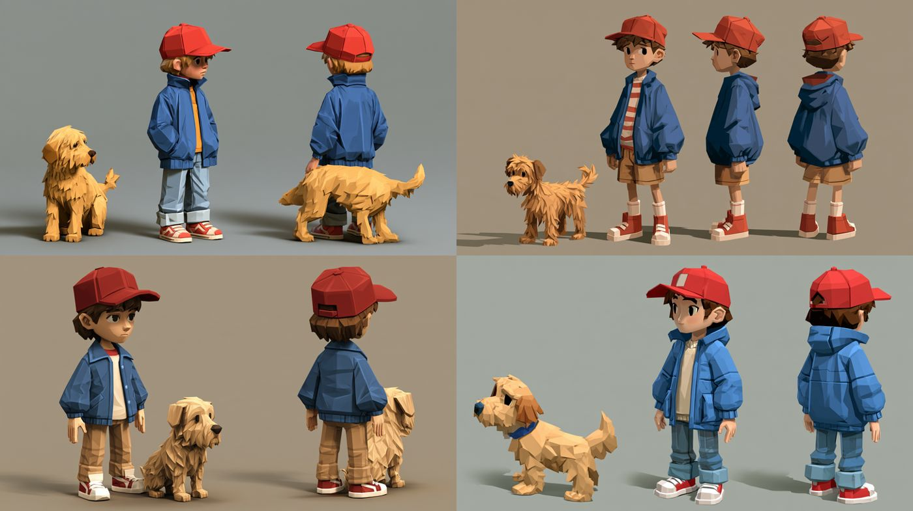

Evan, 2026-10-23, 7:45 AM: "climbing isn't working that well. this needs another UX / UI pass too it's not game ready at all. and the school is inconvincing and needs an upgrade, as does the dog, and the whole artwork." This study takes the game from AW-STUDY-0026 and rebuilds the climb, the screens and every piece of art, keeping its canon: golden dusk, slow station wagons, two barriers, burning headlights you feel, a fictional school and town.
Before and after
Same game state, same moment, the round-three build on the left and this one on the right.

Before. The climb stalled at the door: a second grab did nothing until you let go first.

After. One tap moves whichever hand can reach. The camera follows you up.

Before. The roof.

After. Gravel, fascia, skylights, the air handler and the brick barrier.
Evan, 8:47 AM: "the school sucks really needs work, and you need to try that toon shader you just built." The building now follows the key art, with the details that say "school" from the street. The whole scene is drawn in Sunday Toon from the Shaders article.

The wall. A low sun rakes across it and a tree's shadow falls on the climb, as in the key art. A thin slate roof edge replaces the cream slab, and the low wing has windows facing the street.

From above. A brick boiler chimney, a flag on its pole, hopscotch, swings and a slide in the yard, and a chain-link run off the wall.
Sunday Toon (simulations/toon-kit.mjs) patches three's own materials, so every texture, shadow and fog keeps working. The light wraps round the back, falls into three soft bands and fills the shadow side with a violet sky tint, and a warm rim picks out edges. ?look=ink adds ink lines to the kid, bub and the cars; ?look=plain turns it off.
A deeper dusk: a lower, oranger sun, less flat fill, and a sky that runs from orange to violet.
The climb, fixed
One tap, the right hand. Tap a hold and the hand that can reach it goes there; the other hand stays put. Before, you had to let go first, so most taps did nothing and the climb stalled at the door. Tapping your own hand still lets it go.
No dead ends. When both hands could reach, the game picks the one that leaves the most holds in reach further up, then the hand on that side, then the trailing hand. Climbing feels hand over hand and you can't trap yourself.
Thumb-sized targets. Holds are picked by distance on screen (at least 54 px, about 8% of the screen), and a tap near a shining hold prefers it over a dull one.
See what you can reach. Reachable holds shine (the worn spot where small hands have been). For the first six grabs, a soft ring sits on the best hold upward. No words.
A camera that follows. Side-on from across the street, a little to the side, framed in metres so a phone in portrait sees the same climb as a laptop. It rises with you.
A body that climbs. Young Daddy's arms and legs are real two-bone limbs: hands close on the holds, feet push on the brick, arms shake as you tire.
Keys on a laptop. Arrow keys or WASD grab the best hold up, down, left or right.
The UX pass
A breathing glass play orb on the opening shot, the key art's composition: the long wall side-on, the kid and bub on the lawn. It wakes the sound.
The kid walks bub to the wall on their own, then the power glass appears. Hold, release in the gold.
On the roof, tap bub or anywhere over the yard to throw down a ball when your hands are full. You carry them in your arms.
When the ball lands on the roof, bub looks up and whines. That's the reason to climb.
Busted: a grown-up gets out on the sidewalk with a flashlight. On the roof you slide back to the last place nobody could see you, not to the start.
The hang drop has one small glass timing ring: let go when the dot is in the gold.
A gentle buzz in your hand on each grab, a jolt when you're busted (on phones that can).
Still zero words on screen: a back chevron, one score chip, a timing glass or ring only while it's needed, a replay orb at the end.
The 8-bit look is one switch away: play.html?pixel.
The models, beside their references
Each one spins and zooms. They are hero low-poly recipes in code: named parts, real materials (brick with mortar relief, a sheen on bub's coat, chrome that reflects the dusk), and nothing opaque.

Reference. Evan's key art (Midjourney, AW-STUDY-0026).The school. Brick with mortar and a few flashed bricks, two bands of aluminium ribbon windows with classrooms glimpsed behind, a cream metal fascia, gym piers and high windows, skylights, air handlers, the street, houses and power lines.
Reference
The family cast's look for bub: a black Labrador, coat #1b1a1a, brown eyes, red collar with a brass tag. Evan: "black lab".
Built
A deep chest and tucked loin lofted along the spine, a broad skull with a stop, a square muzzle, soft drop ears, an otter tail. Legs are two-bone reaches to planted paws: walk, trot, gallop, sit, pant and bark.
Bub. Tap the glass under him for stand, walk, trot, gallop and sit.

Reference. The character proofs. Canon overrides them: young Daddy has a blond mop and never a hat, in a white tee and red shorts (Evan's picture).Young Daddy. Stand, walk, climb, throw and shield poses from one rig.Reference. The station wagon in the key art.The wagon. An '80s family wagon from a side profile: woodgrain panels, chrome trim and roof rack, square headlamps.
How it shows information
What the player feels
"I'm sneaking. That one shines, I can reach it. My arms are shaking. Don't let the cars see me. I got the coin!"
How would the character know?
The worn shiny spot on a bracket, headlights on the brick, the car braking, your own breath and shaking arms, bub sitting below watching you.
Mode
Diegetic first (headlights, the dog's pile, bub watching, lamps coming on as dusk deepens); spatial for reach (the shine and the nudge ring); meta for feelings (burning glare, heartbeat, shaking arms, a buzz in your hand); overlay only for the timing glass and the score chip.
Who it's for
The player, a child.
The whole game adapts
One dusk clock drives the sky, the sun's colour, the fog, the classroom and house windows, the wall lamp and the street lights.
How it was made, and how to be faster next time
From Evan's words at 7:45 AM to a game-ready build in about an hour. About 40% of the time went on the art recipes, a quarter on composition fixes that only showed up in screenshots, a fifth on the climb.
One command for the preview.tools/advance-artifact/bundle.mjs turns any study page into a publishable preview.
A robot player.tools/minigame-test/school-flow.cjs plays the game by its own rules and screenshots every beat, waiting on game state, never on time. Shoot portrait first.
A kit to start from. The climb rules, the low-poly kit, bub and young Daddy are shared modules, ready for Grace's basement and the next memory place.
Frame in metres from the first view, and check props against the camera lines before placing them.
The full review: docs/oracle/school/SCHOOL_READY_STUDY.md.